MemoryLens
Apple Vision Pro 智能寻物助手 · AI Native 交互设计与实现
背景与问题
MemoryLens 聚焦老年人“日常物品遗忘”的痛点，选择 Apple Vision Pro 为载体。项目目标是把“看见物体”升级为“语义理解 + 空间导航”，并提供具有情感温度的陪伴式反馈。
问题定义：不是单纯的目标检测，而是“视觉定位 + 语音引导 + 情感陪伴”的多模态连续交互。
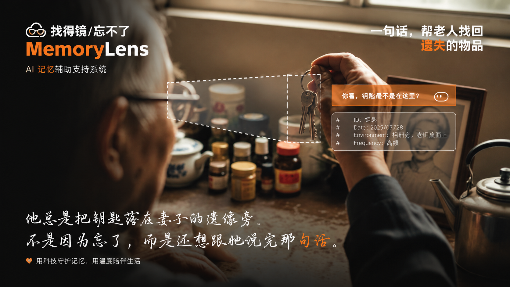
MemoryLens 核心概念图
设计方案
独立负责产品体验设计与品牌视觉系统。基于 Vision Pro 完成可交互原型，并通过 TRAE 实现 Vibe Coding 快速开发。后端整合 YOLO 视觉识别与 Dify LLM 工作流，构建了完整的寻物链路。
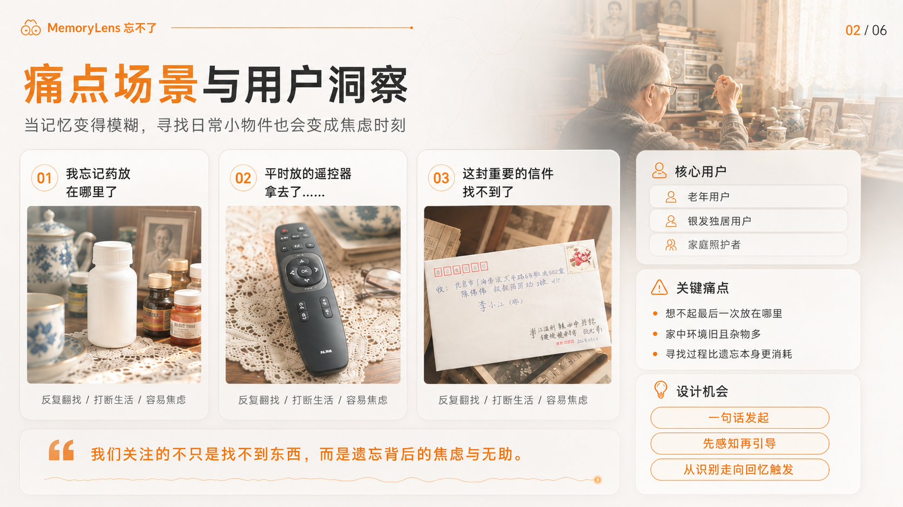
AI 驱动的视觉识别与反馈逻辑
系统支持用户通过自然语言询问（如“我的钥匙在哪？”），Vision Pro 实时扫描空间并高亮目标物体，同时通过语音提供具体的方位指引。
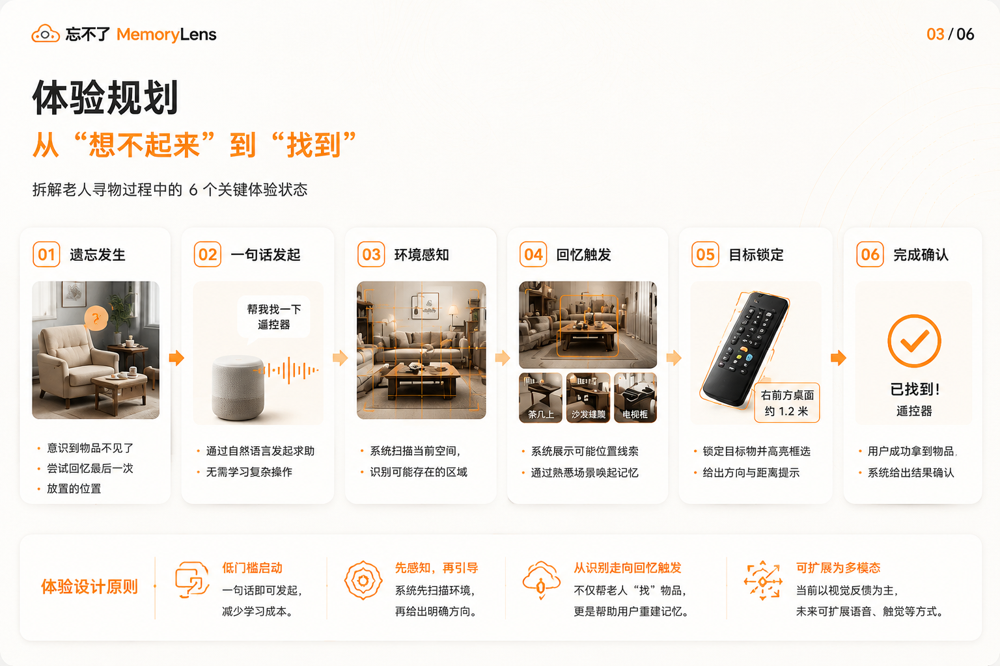
多模态交互界面细节
最终结果
48h+
黑客松高压开发节奏
3层
视觉 / 语音 / 空间反馈
1套
可运行的 Vision Pro Demo
个人反思
这个项目强化了我的一个方法论：AI 交互不该只停在聊天界面，而要结合具体情境形成“动作可执行”的反馈链路。未来如果继续迭代，我会优先补充用户测试与多物体冲突场景策略。
视觉资产
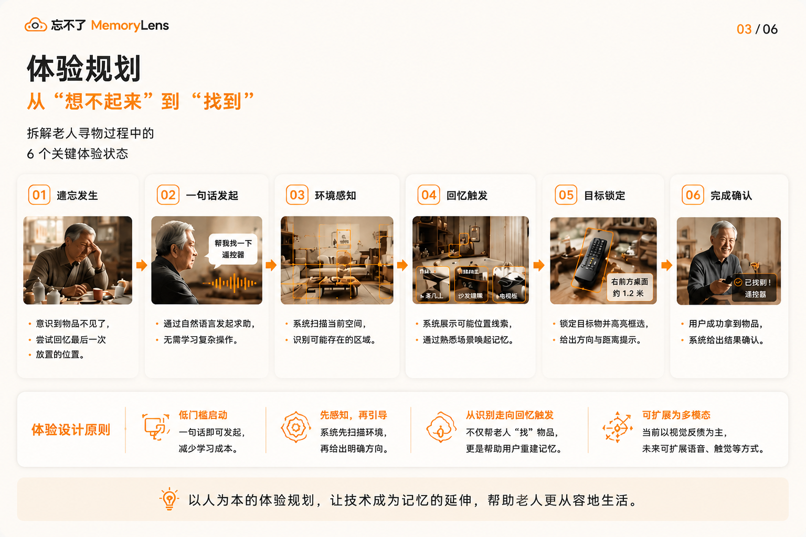
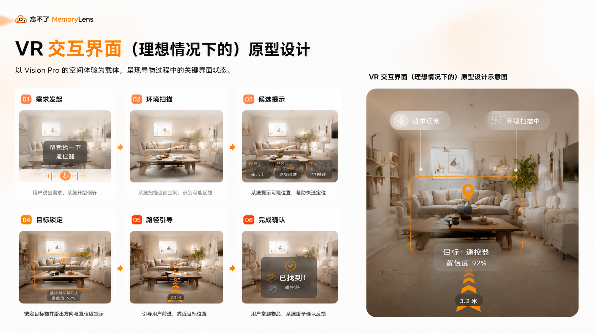
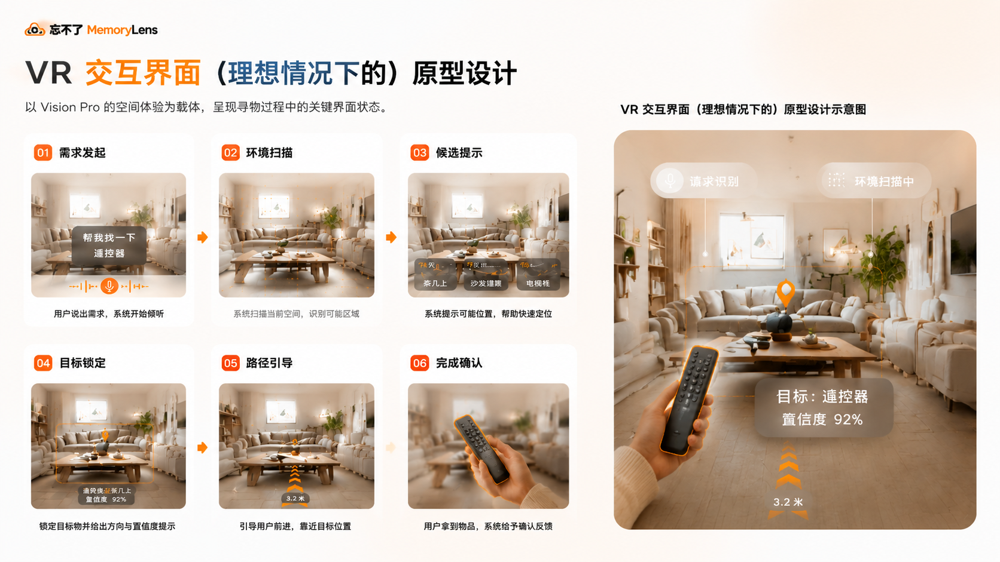
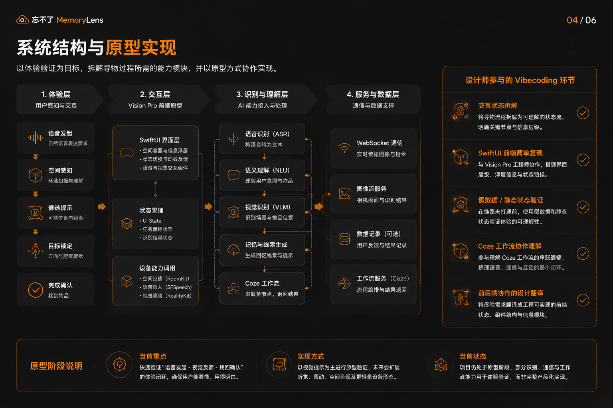
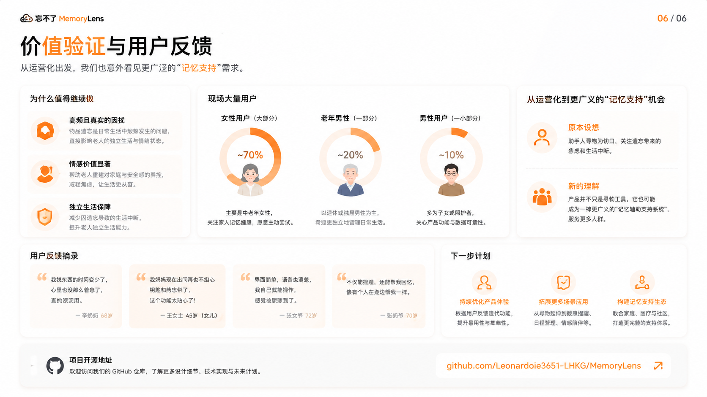
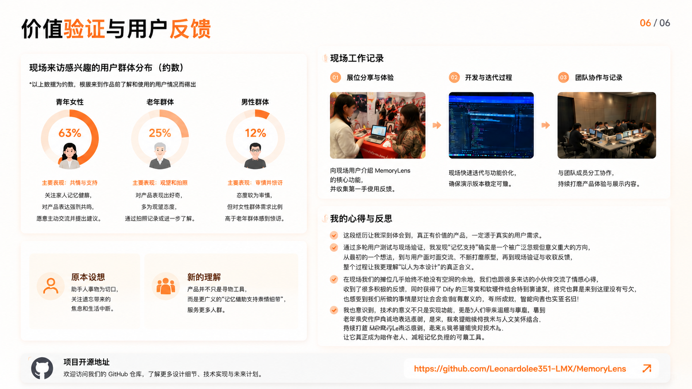
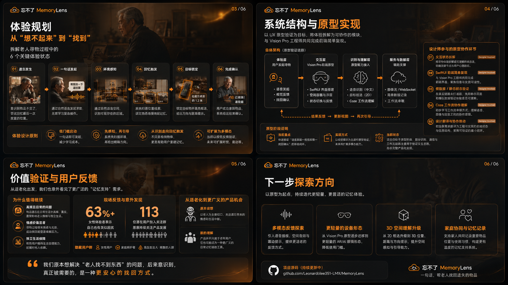
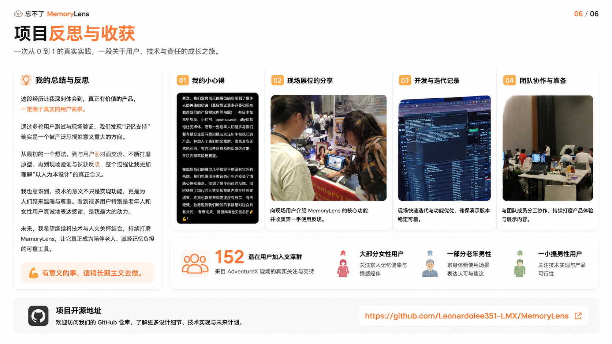